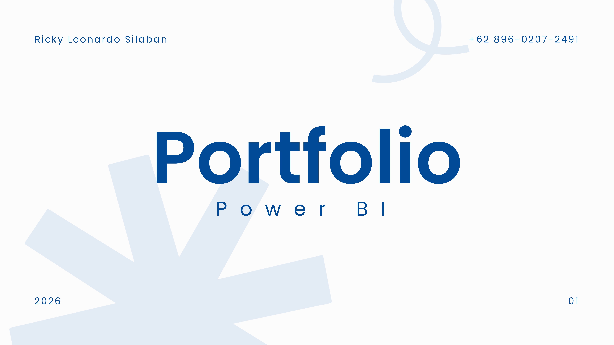
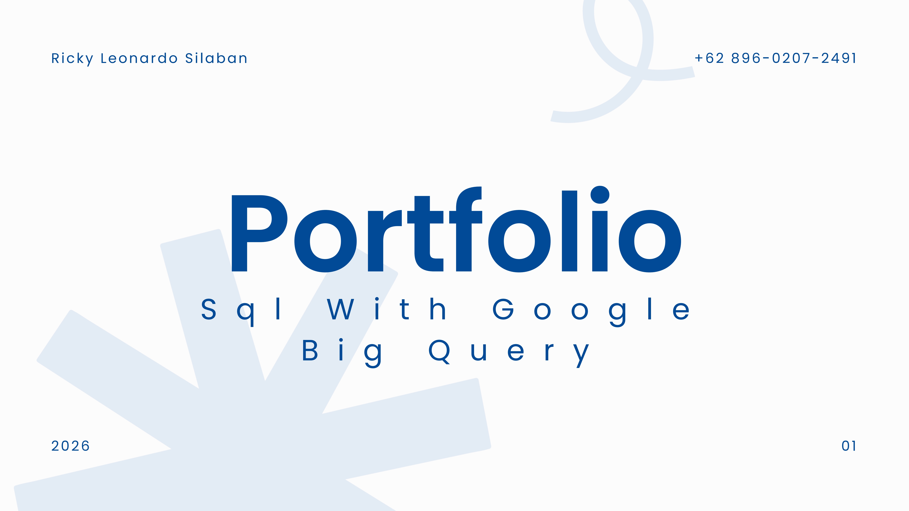

Power BI | Global FMCG End-to-End Strategic Analytics Dashboard | Jun 2026

Proyek ini berawal dari tantangan nyata di industri FMCG multinasional, di mana data operasional sering kali terisolasi di masing-masing departemen (Data Silo). Tim penjualan, pemasaran, keuangan, dan logistik bekerja dengan sistem pelaporan terpisah, sehingga manajemen tingkat tinggi (C-Level) kesulitan mendapatkan visibilitas bisnis secara holistik.
SQL Bigquery | Supply Chain Optimization: Membongkar Kebocoran Profit & Performa Logistik | Jul 2026

Proyek portofolio ini membedah data operasional retail global (DataCo Smart Supply Chain) di Google BigQuery untuk mencari tahu alasan utama di balik menurunnya margin keuntungan perusahaan. Fokus analisis ini mencakup dua aspek krusial: Cost Control (efisiensi biaya) dan Logistics SLA (ketepatan waktu pengiriman).